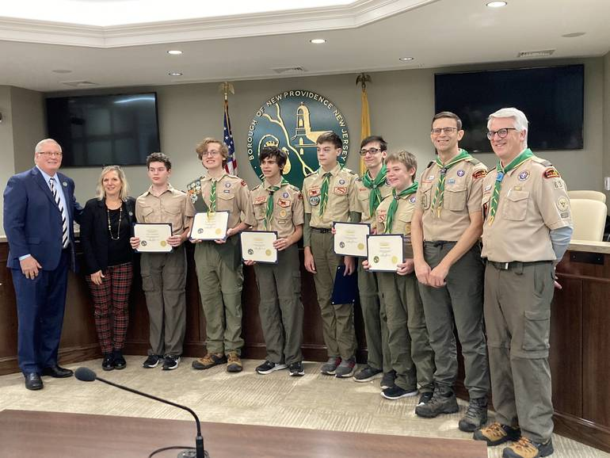

Adults
Volunteer Roles and Responsibilities
In Troop 63, adults play a crucial role in supporting the troop's activities and ensuring a positive experience for scouts. Here’s an overview of the various roles:
Troop Leaders
Troop Leaders are responsible for the overall management of the troop, including planning meetings, organizing events, and providing leadership. They ensure that all activities are conducted in accordance with Scouting principles and safety regulations.
Assistant Leaders
Assistant Leaders support the Troop Leaders in their duties. They help with planning and executing troop activities, supervising scouts, and providing guidance as needed.
Committee Members
Committee Members handle the administrative aspects of the troop. They assist with budgeting, fundraising, and other essential tasks to support the troop’s operations.
Merit Badge Counselors
Merit Badge Counselors are volunteers who assist scouts in earning merit badges. They provide instruction and guidance on specific skills and help scouts meet the requirements for various badges.
Parents and Guardians
Parents and guardians are encouraged to get involved in troop activities. Their support is invaluable for the success of the troop and the development of the scouts.